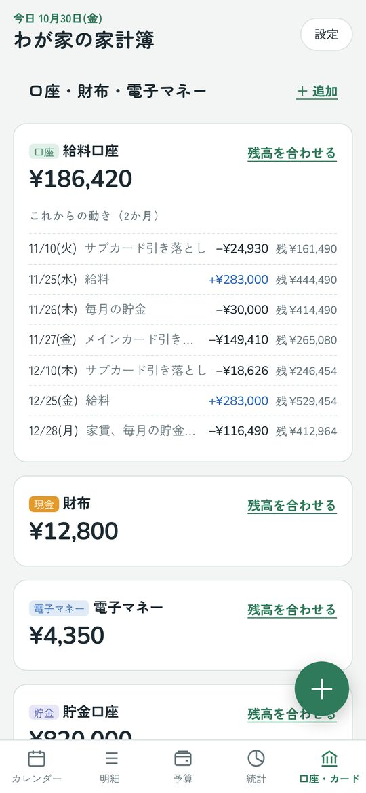

まいにち家計簿
使い方ガイド
カード払いが「いつ・どの口座から・いくら」引き落とされるかまで自動で計算する家計簿です。アプリのインストールは不要で、iPhone・Android・iPad・パソコンで使えます。
1. はじめに：ホーム画面に追加する
この家計簿は、ブラウザで開くWebアプリです。ホーム画面に追加すると、ふつうのアプリと同じようにアイコンから開けます。
iPhone・iPad
- Safariで上のURLを開きます。QRコードはカメラアプリで読み取り、出てきたリンクを押すと開けます。
- 画面の下（iPadは右上）の共有ボタン（□に↑）を押します。
- メニューを下にスクロールしてホーム画面に追加を押します。
- 右上の追加を押します。ホーム画面に「家計簿」のアイコンができます。
- Safariを閉じて、ホーム画面のアイコンから開きます。
Android
- Chromeで上のURLを開きます。
- 画面の上に出る「追加する」を押すか、右上の︙→ホーム画面に追加（またはアプリをインストール）を押します。
- インストール（または追加）を押します。
- ホーム画面のアイコンから開きます。
パソコン（Windows・Mac）
- Chrome・Edge・Safariのどれかで上のURLを開きます。
- ChromeとEdgeは、アドレスバーの右にあるインストールのマークを押すと、アプリとして使えます（そのまま使ってもかまいません）。
2. 最初の設定（4ステップ）

はじめて開くと設定画面が出ます。あとから全部変えられるので、わかるところだけ入れれば大丈夫です。
- 家計簿の名前：好きな名前をつけます。
- お金の置き場所：銀行口座・財布・電子マネー（PayPay、Suicaなど）・貯金用の口座を入れます。いくつでも追加できます。今の残高は空欄でもかまいません。
- クレジットカード：カードの名前、締め日、支払い月（翌月／翌々月）、引き落とし日、引き落とし口座を入れます。何枚でも追加できます。カードがなければとばします。
- 月の予算：費目ごとに、1か月に使っていい金額を入れます。空欄でもかまいません。
3. 記録のしかた

右下の＋を押すと記録の画面が出ます。カレンダーの日付を2回タップしても、その日の記録ができます。
| 支出 | 買い物など。支払い元で、口座・財布・電子マネー・カードから選びます。 |
|---|---|
| 収入 | 給料など。入金先の口座を選びます。 |
| 振替・チャージ | ATMで現金を引き出す、電子マネーにチャージする、貯金用の口座に移す、など。支出には数えません。 |
カードで払ったとき
支払い元にカードを選ぶと、何月何日にどの口座から引き落とされるかが下に表示されます。引き落とし日が土日祝・年末年始なら、自動で次の平日にずらします（カードの設定で「前の平日」にもできます）。
- 10月14日に使った → 10月15日の締めに入る → 11月10日に引き落とし
- 10月16日に使った → 11月15日の締めに入る → 12月10日に引き落とし
同じ日に引き落とされるカード払いは、自動でまとめて1回の引き落としとして計算します。
- 分割払い：支払い回数（2〜36回）を選ぶと、毎月の引き落としに分けて入ります。
- 返金：「収入」で入金先に「（カード名）（返金）」を選ぶと、次の引き落とし額から差し引かれます。
- カードで電子マネーにチャージ：「振替・チャージ」で、どこから＝カード、どこへ＝電子マネーにします。
記録を直す・消す
カレンダーや明細の記録を押すと、編集の画面が出ます。削除は2回押すと消えます。
4. こんなときはどう記録する？
よくある場面ごとの記録のしかたです。迷ったらこの表を見てください。
| こんなとき | 種類 → 選ぶもの |
|---|---|
| コンビニで現金で買った | 支出 → 費目「食費」、支払い元「財布」 |
| スーパーでカードで買った | 支出 → 費目「食費」、支払い元「（そのカード）」。引き落とし日は自動で計算されます |
| PayPayなどで払った | 支出 → 支払い元「PayPay（電子マネー）」 |
| ATMで現金をおろした | 振替・チャージ → どこから「銀行口座」、どこへ「財布」 |
| 銀行からPayPayにチャージした | 振替・チャージ → どこから「銀行口座」、どこへ「PayPay」 |
| カードでPayPay・Suicaにチャージした | 振替・チャージ → どこから「（そのカード）」、どこへ「PayPay」。カードの引き落としにも入ります |
| 給料が入った | 収入 → 種類「給与」、入金先「給料の口座」。毎月なら「毎月の入出金」に登録すると自動で入ります |
| 家賃・電気代が口座から引き落とされた | 支出 → 支払い元「銀行口座」。毎月なら「毎月の入出金」がおすすめ |
| 電気代・スマホ代をカードで払っている | 「毎月の入出金」で、支払い元を「（そのカード）」にして登録 |
| 貯金用の口座にお金を移した | 振替・チャージ → どこへ「貯金用の口座」。支出には数えず、「貯金」として集計されます |
| 家電を12回払いで買った | 支出 → 支払い元「カード」、支払い回数「12回払い」 |
| 返品してカードに返金された | 収入 → 種類「返金」、入金先「（そのカード）（返金）」。次の引き落としから引かれます |
| 友だちの分を立て替えた | 支出 → 費目「予算外」・内訳「立て替え」。返してもらったら収入 → 種類「その他」 |
| 税金・冠婚葬祭など特別な出費 | 支出 → 費目「予算外」。予算の計算に入らず、残高からは引かれます |
| 電子マネーや財布の残高が合わなくなった | 「口座・カード」タブ →「残高を合わせる」で、今の金額を入れ直す |
5. 画面の見かた

いちばん上（今日のお金）
- 今日のお金の合計と、口座ごとの残高。押すと、その口座の明細が見られます。
- 次のカード引き落とし：日付・金額・どの口座から・引き落とし後の残高。足りないときは赤で表示します。
- 2か月先までに残高が足りなくなりそうな口座があると、⚠ のお知らせが出ます。
下のタブ
| カレンダー | 日ごとの支出・収入。カードの引き落とし日には「引落」の印。 |
|---|---|
| 明細 | 月の記録の一覧。上のボタンで口座やカードごとに絞り込めます。 |
| 予算 | 費目ごとの残り、1日あたりに使える金額。 |
| 統計 | 費目別・支払い元別の円グラフと、6か月の推移。 |
| 口座・カード | 口座ごとの残高とこれからの動き、カードごとの引き落とし予定。 |
月は‹ ›のボタンか、左右にスワイプして切り替えます。
残高がずれてきたら
口座・カードタブで残高を合わせるを押し、通帳やアプリに出ている今の残高を入れます。その日から計算し直します。
6. 残高の見込みとお知らせ
この家計簿は、今日の残高にこれから入るお金・出ていくお金を足し引きして、口座の残高が先々いくらになるかを計算します。これが「残高の見込み」です。

見込みに使われるもの
- まだ引き落とされていないカード払い（分割払いの残りもふくむ）
- 「毎月の入出金」に登録した給料・家賃・サブスク・貯金など
- 先の日付で記録した入出金
どこで見られる？
- 口座・カードタブの「これからの動き」：日付ごとに、出入りする金額と、そのあとの残高（「残 ¥…」）が並びます。
- 画面のいちばん上の「次のカード引き落とし」：次に引き落とされる日・金額・引き落とし後の残高。
| 11月10日 | カードの引き落とし −24,930円 → 残 75,070円 |
|---|---|
| 11月25日 | 給料 +283,000円 → 残 358,070円 |
| 11月26日 | 毎月の貯金 −30,000円 → 残 328,070円 |
| 11月27日 | 家賃とカードの引き落とし −234,410円 → 残 93,660円 |
このように、給料日の前に足りるか、引き落としの日に足りるかが前もってわかります。
お知らせ（⚠）
見込みの中で残高がマイナス（足りない）になる日があると、画面のいちばん上に「⚠ 11月27日に「給料口座」が 12,000円 足りなくなります」のように表示されます。足りない分を前もって入金したり、使う額を調整したりできます。
お知らせの設定（設定 →「残高の見込みとお知らせ」）
| どこまで先を計算するか | 1か月・2か月・3か月・6か月から選べます。ふだんは2か月がおすすめです。 |
|---|---|
| お知らせする残高のライン | 0のままなら、マイナスになりそうなときだけ知らせます。30,000にすると、残高が3万円を下回りそうなときに知らせます（少し余裕をもって知りたい人向け）。 |
| 財布（現金）もお知らせする | オンにすると、財布の残高もお知らせの対象になります。 |
| 合計に貯金用の口座を入れる | オフにすると、画面の上の「今日のお金の合計」が、貯金をのぞいた使えるお金だけの合計になります。 |
見込みが実際とずれるときは
- 今日の残高がずれている → 「口座・カード」→「残高を合わせる」で今の残高を入れ直します。
- カードで買った物の記録もれ → 見込みのカード引き落としが実際より少なくなります。
- 給料や家賃を「毎月の入出金」に登録していない → 先の入出金が見込みに入りません。
- カードの締め日・引き落とし日がちがう → 設定 → カードを押して確認します。
7. 毎月の入出金（自動で入る予定）
給料・家賃・サブスク・毎月の貯金など、毎月決まったお金は設定→毎月の入出金→＋ 追加で登録します。
- 毎月その日に「予定」として自動で入り、残高の見込みに使われます。
- カードで払うサブスクは、支払い元にカードを選ぶと、カードの引き落としに入ります。
- 終わる月（ローンの最終月など）も決められます。
- 予定を押すと、金額を直して記録済みにするや、今月はなしができます。
8. 予算の使い方
- 予算タブの予算を変更で、費目ごとに1か月の予算を入れます。空欄の費目は予算の計算に入りません。
- 上に今月の残りと、月末までの1日あたりに使える金額が出ます。85%を超えると黄色、超えると赤で表示します。
- 「予算外」の費目（税金・特別な出費など）は、残高からは引かれますが、予算には数えません。
- 費目の右の削除を押すと、その費目をすぐに消せます（6秒以内なら「元に戻す」）。消した費目の記録は「予算外」に移ります。
- 給料日始まりで予算を管理したいときは、設定 →「表示」→月の始まり日を給料日にします。25日にすると「11月」は10月25日〜11月24日になります。
9. 設定でできること

右上の設定から、ほとんどすべてを変えられます。変えた内容はすぐに反映され、記録が消えることはありません。
- 口座・カード：追加・編集・並べ替え。使わなくなったものは「非表示」にできます（過去の記録は残ります）。
- 費目：追加・削除・名前・色・並び順・内訳。予算の画面の削除からもすぐ消せます（6秒以内なら「元に戻す」）。
- 収入の種類：追加・削除・名前・並び順。
- 表示：ライト／ダーク、テーマの色、背景の色（8色から選ぶか、虹色の丸で好きな色を選べます）、週の始まり（日曜／月曜）、月の始まり日（25日にすると「11月」が10/25〜11/24になります）、開いたときの画面、予算・統計のタブを隠す。
- 記録の初期値：はじめに選ばれている種類・支払い元・入金先。
- お知らせ：何か月先まで計算するか、いくらを下回ったら知らせるか（くわしくは「6. 残高の見込みとお知らせ」）。
- 家族と共有：同じ家計簿を家族と一緒につける機能を準備中です（近日公開）。
10. バックアップと機種変更
バックアップを保存する
- 設定→バックアップを保存を押します。
- iPhone・iPadは"ファイル"に保存→「iCloud Drive」を選んで保存。Androidは「ドライブ」などを選びます。パソコンは「ダウンロード」フォルダに保存されます。
新しい端末に移す・元に戻す
- 新しい端末で家計簿を開き、最初の設定は適当に入れてはじめるまで進めます。
- 設定→バックアップから戻す→保存したファイルを選びます。
- 置きかえるを押すと、記録も設定も元どおりになります。
Excel用（CSV）に書き出すで、記録をExcelやGoogleスプレッドシートで開ける形でも保存できます。
11. よくある質問
記録が消えてしまいました。
Safariで開いた家計簿と、ホーム画面のアイコンから開いた家計簿は記録が別です。いつも使っている方から開いてみてください。iPhoneでは、ホーム画面に追加せずSafariだけで使っていると、しばらく開かなかったときに記録が消えることがあります。必ずホーム画面に追加して使い、バックアップをとってください。
家族と同じ家計簿を見られますか？
今はできません。記録はそれぞれの端末の中だけに保存されます。家族と同じ家計簿をつけられる機能を準備しています（近日公開）。
銀行やカードと自動で連携できますか？
できません。記録は手で入力します。そのぶん、ログイン情報などを預ける必要はありません。
入力したデータはどこかに送られますか？
送られません。記録はすべて、お使いの端末の中だけに保存されます。
ネットにつながっていなくても使えますか？
一度開いたあとは、オフラインでも使えます。
引き落とし日が実際とちがいます。
設定→カードを押して、締め日・支払い月・引き落とし日・土日祝の扱いを確認してください。変えると、これまでのカード払いもすべて計算し直します。
残高が実際とずれました。
口座・カード→残高を合わせるで、今の残高を入れ直してください。
「新しいバージョンがあります」と出ました。
更新するを押すと新しいバージョンになります。記録はそのまま残ります。
口座やカードが削除できません。
記録で使っているものは、過去の記録を守るために削除できません。代わりに「非表示」にすると、選ぶ画面に出なくなります。
最初からやり直したいです。
設定→すべて消去で、記録と設定をすべて消して最初の画面に戻ります（元に戻せないので、先にバックアップをおすすめします）。
12. 利用規約（大切なお願い）
- 家計簿のURL・QRコード・この使い方ガイドを、ほかの人に教えたり渡したりしないでください。
- SNS・ブログ・掲示板・フリマアプリなど、だれでも見られる場所に載せないでください。
- アプリやガイドをコピーして配ったり、売ったりしないでください。
守られなかったときは、URLの変更や利用の停止をしたり、損害の賠償を請求したりすることがあります。全文はアプリの設定→利用規約からご覧いただけます。
お問い合わせ
わからないことや不具合は、ご購入いただいたBOOTHのショップの「ショップにメッセージを送る」からお知らせください。お使いの端末（例：iPhone 15、Android）と、どの画面で何をしたかを書いていただけると、早くお答えできます。